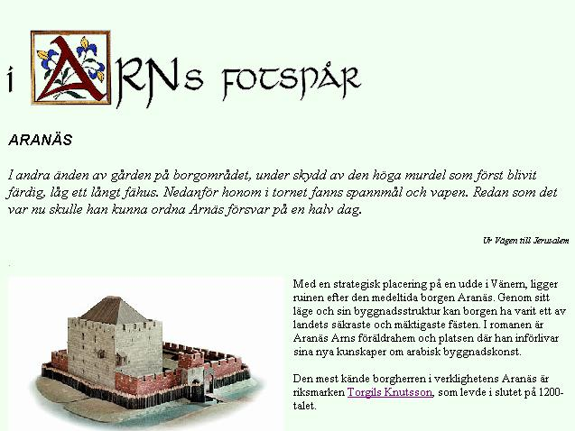
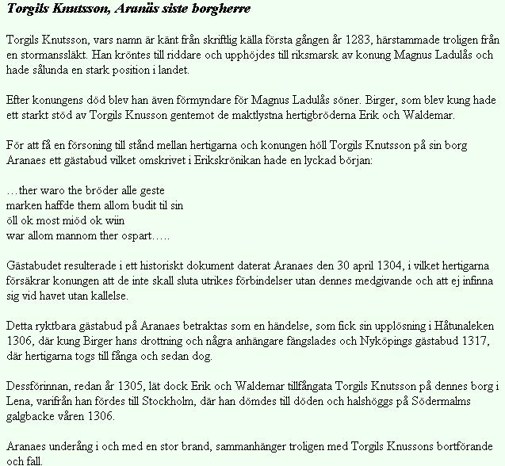

Södermalm i tid och rum. Stockholm
Nationalencyklopedin Torgils Knutsson[-gils], d. 1306, marsk. T., som räknade släktskap med kungafamiljen, var vid Magnus Ladulås död 1290 rikets marsk och blev Sveriges egentlige styresman under Birger Magnussons minderårighet. Hans tid vid makten dominerades utrikespolitiskt av svensk expansion österut; under hans egen ledning erövrades 1293 delar av Karelen, där gränsfästet Viborg uppfördes, och 1300 gjordes ett misslyckat försök att vid Nevas utlopp anlägga en svensk fästning, Landskrona. Inrikespolitiskt syftade T. till att minska kyrkans inflytande och gynna statsmaktens och aristokratins intressen, vilket ledde till opposition inom kyrkovänliga kretsar. Detta utnyttjades av den unge kungen och hans bröder, hertigarna Erik och Valdemar, när de i tillfällig enighet bestämde sig för att befria sig från T:s dominans. T. fängslades i december 1305 och avrättades kort därpå. Han begravdes i ovigd jord men gravsattes snart i nuv. Riddarholmskyrkan i Stockholm.
Ur Svenskarna och deras hövdingar, Verner von Heidenstam XVIII. TYRGILS KNUTSSON.Sönerna hette Birger, Erik och Valdemar. Marsken blev en vis förmyndare, och folket sade: »Här fattas varken fröjd, dans eller tornej hos herrarna eller säd, fläsk och sill i stugorna. Sent kommer det att stå så väl till som nu i Tyrgils Knutssons dagar.»
När kung Birger blev aderton år, höll han bröllop med en syster till danakungen Erik Menved, som förut hade äktat hans egen syster. Det var i Stockholm, och marsken öppnade ordentligt på rikets pung. Omringade av uppmärksamma åhörare, stodo gycklare och vandringsmusikanter på bord och tunnor och utropade med hög röst de sista nyheterna, efter det ännu inte fanns några tidningar. Var bekant riddare, som drog förbi, hälsades med glada rop. I husen, där riddarna fingo kvarter, utstuckos deras lansdukar genom fönstret, så att det hängde vapenprydda fanor, vart man såg. Häftigast blev jublet, när konungens båda bröder tågade in. Valdemar brydde sig ingen om, men Erik ville alla fram och hylla. Han strålade av ungdom och överdåd, och när han höjde handen, såg det ut, som tänkte han plocka guldpåsar och kungakronor från himmelens sky. »Driv undan byket!» sade han till sin småsven. »Jag vill inte gnida min fot mot trasorna.» Men hopens enda svar var ett nytt glädjesorl.
Slutligen blåste trumpetarna till tornej. Fruarna och jungfrurna, som sutto kring rännarbanan med silverkransar och mjuka dukar på håret, reste sig från bänkarna av iver. Med lansen stödd i armhålet jagade riddarna mot varann på sina hästar, och bakom stodo svennerna med bolstrar för de sårade. Också för löst folk flöt det den kvällen mjöd, öl och kirsedrank. En slogs med kniv, en annan med sin flaska, och den, som hade ingenting, drog sin trätobroder i håret. Störst var trängseln framför den timmersal, som enkom uppförts för riddarnas gästabud.
Därinne räckte svennerna fram faten på knä, och där gick det inte an att snyta sig i fingrarna eller borra med knivskaftet i örat. Ja, knappt att peta tänderna med knivspetsen. Drack ena den andra till, skedde det med höviskt sänkta ögon, och köttbenen lades inte tillbaka på tallriken, utan slängdes under bordet, där hundarna slogos om dem. Det var annat än hos småfolk.
Hertig Erik skulle nästa dag slås till riddare. Vid mörkrets inbrott tog han riddarbadet. Iklädd vit skjorta, vakade han sedan hela natten med de andra riddarna i gråmunkarnas kyrka, som nu kallas Riddarholmskyrkan. Där knäböjde han på Magnus Ladulås gravsten framför högaltaret och bad: »Fader, lär mig att i allt bli dig lik!» Men tyst i hans hjärta, så tyst, att han själv knappt hörde det, viskade en mörk stämma: »och att som du, om det tarvas, rycka kronan från en svag dåre till broder.»
På långt håll ljöd sorlet nästa morgon, när han på rännarbanan steg fram inför kung Birger. Han satt blek under en baldakin bredvid sin brud, drottning Märta. Hon hade liten mun, men den kunde aldrig le, och de röda hårbucklorna vippade ovanför guldbandet. Med klar röst svor Erik riddareden: att strida för den heliga tron, stånda emot orätt, beskydda värnlösa och fader- och moderlösa, förakta svek och kämpa för sanning och rätt. Birger gav honom då ett slag med svärdsflatan över skuldran och utropade: »Statt upp ur ondskans sömn, bliv en stridsman med kärlek till friden och Gud hängiven!» Så gav han honom fridskyssen. Svärdet spändes vid hans sida, gyllne sporrar på fötterna, och hjälmen med sin fjäderbuske sattes på hans huvud.
Nu var Erik riddare. Tyrgils gladde sig, som en fader skulle fröjdats åt sina egna barn. Det syntes på hans hermelinsbrämade kappa, att han älskade prakt och var högättad och rik, och han ägde både gårdar och gruvor. Som en ny Birger Jarl styrde han med allt, men han var godmodigare och mer ödmjuk och nöjd att se andra nöjda. Hårlockarna kring de breda och fryntliga dragen begynte redan gråna, men ännu kunde han kasta sitt svärd i luften och fånga det vid fästet. Det svärdet hade följt honom på många krigiska äventyr i de karelska utmarkerna på andra sidan Östersjön. Och när lekar och fester nu voro över, började han åter tänka på att öka det svenska väldet.
Med den vänaste skeppshär seglade han ända upp i Nevafloden förbi de träskiga stränder, där Petersburgs guldbelagda kupoler nu glimma, men där stillheten då endast bröts av sumpfåglarnas skrin och snatter. Där byggde han ett fäste.
Ryssarna samlade sig då till en oöverskådlig här. De läto stora brinnande bål flyta utför strömmen mot de svenska skeppen, men marsken spände hejdande järnkedjor över vattnet. Granna hjälmar och rustningar blänkte i skogen, där ryssarna lägrade sig. En ung och oförfärad hjälte, som hette Mats Kättilmundsson, red då ut över vindbron och hälsade till sina stridsbröder uppe på vallen, att de skulle leva fälla. Nu stod det hos Gud i himmelriket, om han någonsin mer skulle komma tillbaka levande. Därpå lät han en tolk ropa till ryssarna, att han var färdig att strida med den tappraste. Den, som övervanns, skulle följa den andra som fånge med både sadel och häst.
Ryssarna höllo då rådslag, men ingen vågade sig fram. Hela dagen satt han där ensam framför fienden och väntade. Först när dagranden bleknade bortom skogen, vände han hästen och red tillbaka in i borgen, där han mottogs med vänfasta handslag. Men om morgonen fingo svenskarna se, att ryssarna hade mist lusten att strida mot sådana kämpar och smugit sig bort.
Marsken seglade då hem igen till Sverige, där alla visade honom största heder. Han började nu att längta efter vila, och när han vid Birgers kröning hade bortgift sin yngsta dotter med Valdemar, bad han att bli befriad från vedermödorna med rikets skötsel. Bröderna svarade, att de inte kunde finna någon bättre man, och övertalade honom att fortfarande bistå kung Birger. Snart blevo de likväl oeniga om lumpna småsaker och misstrogna mot varann, och hertigarna fingo lära, att marsken troget stod på Birgers sida. »Så länge han lever», tänkte de, »få vi ingenting att säga i landet.» Därför intalade de Birger, att den ärevördiga marsken var enda grunden till missämjan.
En dag satt Tyrgils i Kungslena och styrkte sig efter en lång färd. Då gläntade en tjänare på dörren och viskade: »Jag ser kung Birger komma med sina bröder och många väpnade svenner. Fort till släden, marsk, om livet är dig kärt!» Tyrgils reste sig häpen och svarade: »Jag önskar, att jag hade tjänat min Gud så väl som konungen. Han är min vän, och jag är hans.»
Skaran störtade under tiden in med dragna vapen, och hertigarna ropade: »Så länge den mannen där får leva, blir det aldrig frid mellan oss bröder.» Birger stod askgrå och viljelös utan att tala. Då steg Tyrgils upp och utbrast: »Blygd skall du ha härav, konung, så länge du lever!»
Sedan blev han utledd och upplyft på en häst, och fötterna bundos ihop under hästbuken. På det sättet fördes han i köld och snö genom Tiveden under de korta vinterdagarna, då solen bara en stund sken fram, och under de långa nätterna. Många hästar voro tröttridna, då de slutligen hunno med den gamle till Stockholm och inspärrade honom i tornet.
Valdemar försköt hans dotter. När marsken gick under det fuktiga valvet och tänkte på, hur troget han tjänat sin herre, hörde han spel och dans från salarna, där bröderna förlustade sig i plötslig endräkt och gamman. En dag kom en riddare ned till honom och sade: »Sätt upp ditt testamente och gör ditt skriftemål, ty konungen vill, att du skall dö. Tillgiv mig, att jag måste föra fram ett sådant budskap. Det skall jag sörja över till min sista stund.»
Sedan fördes marsken ut till det ställe, där Södermalmstorg nu har sin plats. Där voro då betesmarker, och en och annan stuga låg vid vägen. Han fick knäfalla under svärdet, och så snart han var halshuggen, nedgrävdes kroppen. Över graven reste hans fränder och tjänare ett altare med kors, och de, som mindes hans lyckliga år, bådo där för hans själ. När det vårade igen, flyttades hans kista till gråmunkarnas kyrka och nedsattes några steg från Magnus Ladulås' minneshäll. »Oroligt sover du nu i din grav, Magnus Ladulås», tänkte de, som buro kistan. »Hur skall det nu gå för dina söner?»
Ur Västra Södermalm, Arne Munthe, 1959
Den kultplats, som uppstod på östra delen av malmen, anknöt till stadens avrättningsplats,
belägen på den höjd invid stora landsvägen söderut, som senare kallades Pelarbacken. På dess
högsta punkt reste sig vid denna tid som ett skräckinjagande varningstecken den stenmurade
galgen.
På Södermalms avrättningsplats mötte marsken Torgils Knutsson år 1306 sitt öde, svekfullt utlämnad till sina fiender av den konung, som han troget tjänat. Marskens avrättning under nesliga former, som måste ha gjort ett skakande intryck på samtiden, skildras i Erikskrönikan på ett par torrt sakliga rader:
»The leddon sunnan widh then stadh
ok giorde swa som konungen badh:
först tha growo the hans graff,
sidhan huggo the honom hwodit aff.»
Som en brottsling begrovs marsken på avrättningsplatsen i oinvigd jord, men efter några månader överflyttades hans stoft till Gråbrödraklostrets kyrka. Vid den ursprungliga graven restes enligt Erikskrönikan två minnestecken
»Ouer then graff han innan laa
ther lotho the eth tiäld ouer slaa,
Ok lotho ther eth altare göra
hwo ther messo wille höra
Ther matten faa hona alla dagha;
-------
Eth korss saa man ther staa,
hwa till stadhin faar eller fraa.
The badho tess heller fore honom.»
Det ligger närmast till hands att av dessa uppgifter sluta sig till, att ett enkelt altare med ett kors uppsatts för att minna om marskens dödsplats men att något egentligt kapell icke funnits här vid tiden för krönikans skildring, antagligen början av 1320-talet. Något kapell på denna plats omtalas heller ingenstädes under hela århundradet. Sedan minnet av den bakomliggande händelsen bleknat bort, kom altaret med korset att i stället fylla en uppgift som kultplats för de vägfarande, som där kunde be en bön för god reslycka eller tacka för lycklig hemkomst. I anslutning till denna kultplats uppfördes - man kan antaga i början av 1400-talet - det kapell, som sedan i stadsböckerna vid lokaliseringen av tomter på västra delen av malmen ofta omtalas som »Helga kors kapell i löt». Kapellet, som tycks ha restaurerats eller byggts om på 1480-talet, låg alltså icke på själva Pelarbacken utan på östra sluttningen nedanför vid den tidigare omtalade s.k. löten (betesmark)."

